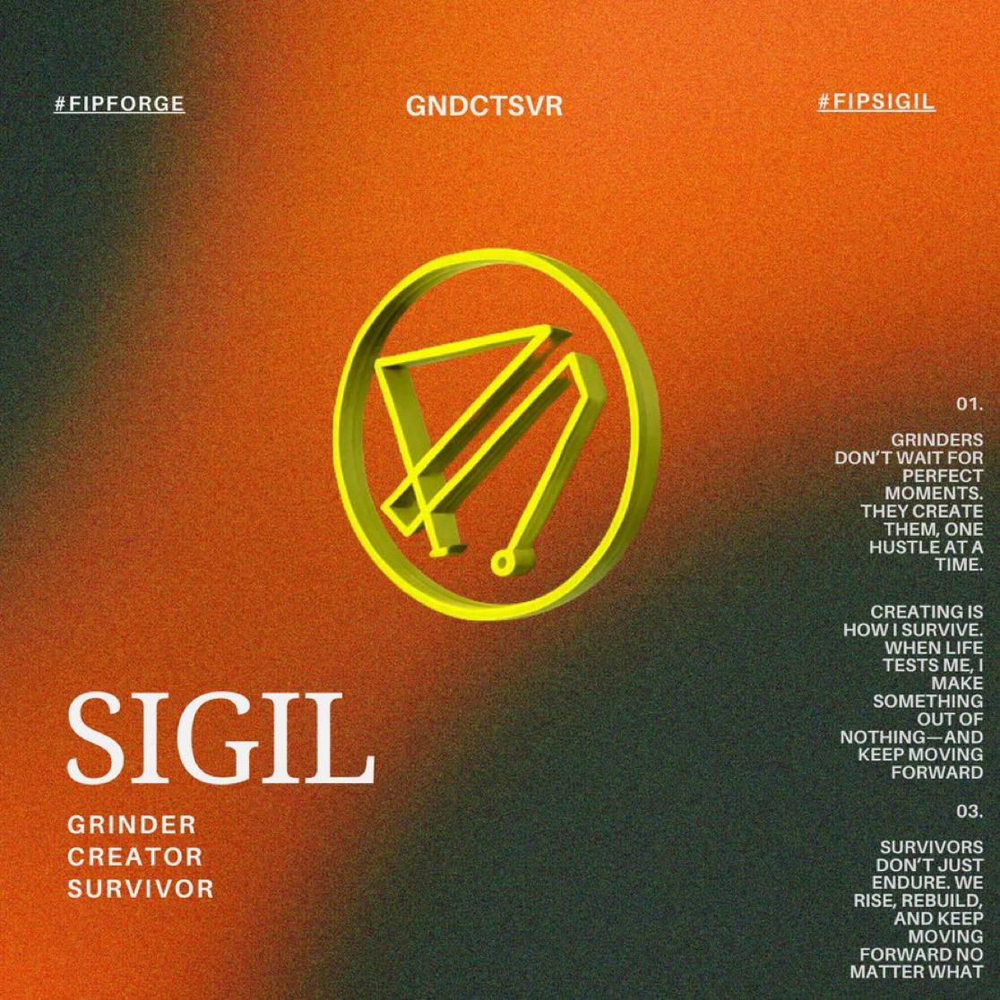
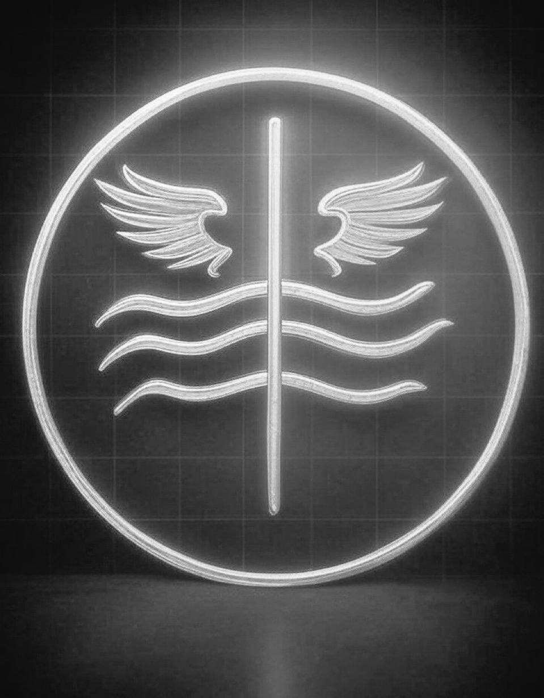
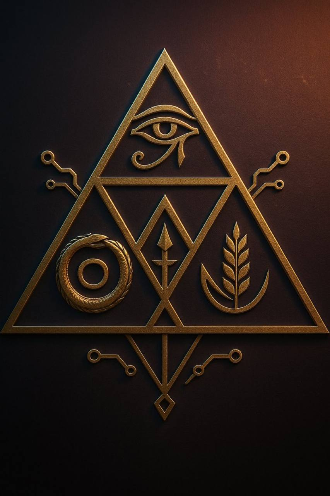
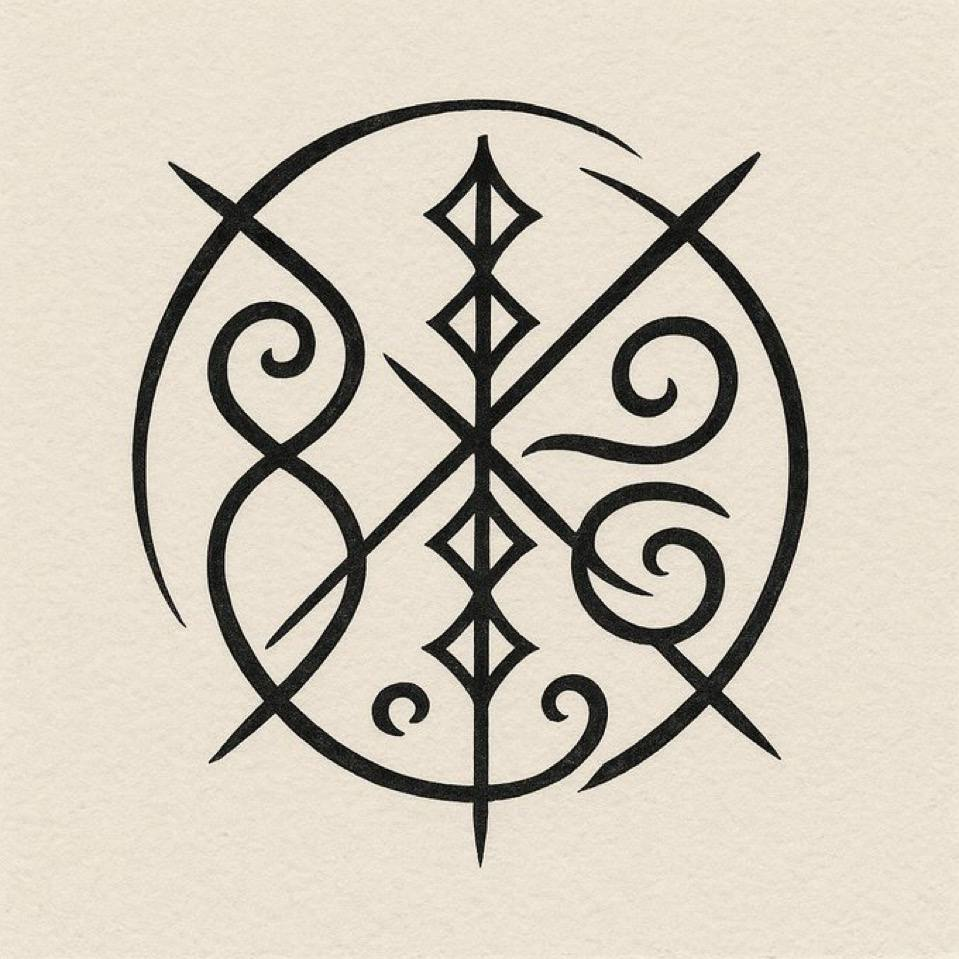

Welcome To FIP Gallery
Explore sacred Sigil designs and symbols from the Forever in Profit community.

Sigil of serenitywithin

Sigil of Beliving

Sigil of ascent of futures

Sigil of Freedom

Sigil of Light

Sigil of spriritual

Sigil of Greatness

Sigil of knowledge and wealth